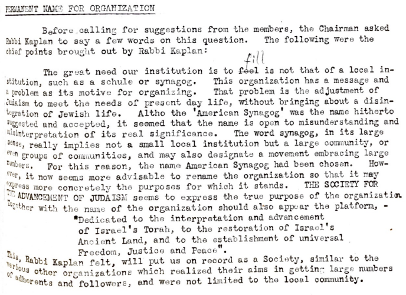
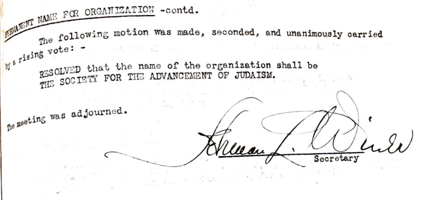

[Add publication and date] The first task Rabbi Kaplan's group faced when forming a new Jewish organization in 1922 was to choose an appropriate name. Kaplan initially thought to call it 'The American Synagogue,'' but soon abandoned that in favor of 'The Society for the Advancement of Judaism.''

